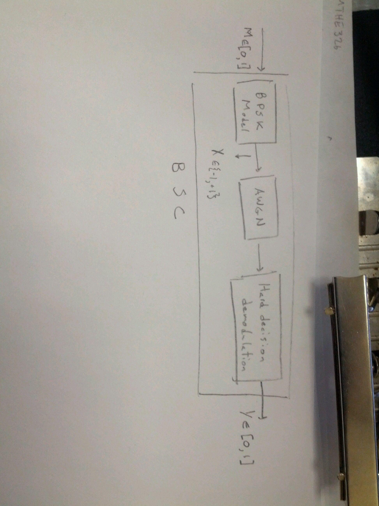

Channel output:
for \(i=1,2,...\), \(X_i\) is the input, \(Z_i\) is the noise
\(X_i\) is independent of \(Z_j\) for all \(i,j\)
\(\{Z_i\}_{i=1}^\infty\) are iid Gaussian with \(Z_i\sim N(0,N)\)
In practice, input is a current or voltage signal. So we need to impose a cost constraint, usually in the form of a power constraint.
For any input sequence \(x^n=(x_1,...,x_n)\) sent over the channel, require:
for some given \(P\).
Note
The AWGN model is widely used for modelling many practical channels, like radio channels, satellite links, telephone channels, etc.
The additive noise is usually due to a variety of causes, whose commutative effect is approximately Gaussian. This is justified by the Central Limit Theorem which states that if \(X_i\) are iid, with mean \(μ\) and variance \(σ^2\), then
Definition (The Information Capacity)
The information capacity of the memoryless Gaussian channel with input power \(P\) is:
Note
We will see via the Channel Coding Theorem for the memoryless Gaussian channel that the above \(C\) is the channel’s operational capacity.
Compute \(C\) is closed form:
The last step follows because \(h(\cdot)\) is invariant under translations.
Therefore
with equality iff \(Y\sim N(0,P+N)\).
Choosing \(X\sim N(0,P)\) yields \(Y\sim N(0,P_N)\) and maximizes \(I(X;Y)\).
Therefore,
discrete-time AWGN channel with input power \(P\) and noise power \(N\).
Note
is the signal-to-noise ratio of the channel (SNR)
Block diagram of BSC equivalent channel of AWGN with BPSK Modulation and Hard decision demodulation:
Definition
A \((M,n)\) code for the Gaussian channel with power constraint \(P\) is:
Set of messages \(\mathcal M=\{1,2,...,M\}\)
Encoder: \(x:\mathcal M\to \mathcal X^n\)
yielding codewords \(x^n(1),...,x^n(M)\) satisfying power constraint \(P\):
for all \(w=1,...,M\)
Rate:
conditional error probability given message \(i\) is sent:
Max: \(λ^{(n)}=max_{i\in\mathcal M}λ_i\)
Average: \(P_e^{(n)}=\frac{1}{M}\sum_{i=1}^Mλ_i\).